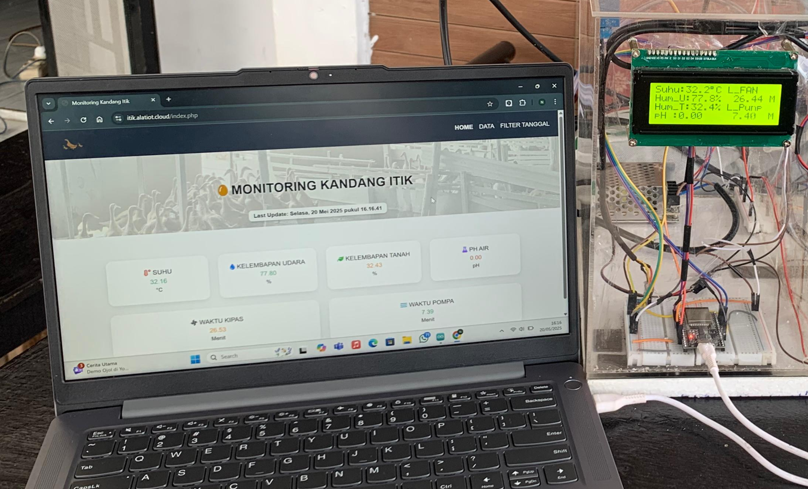
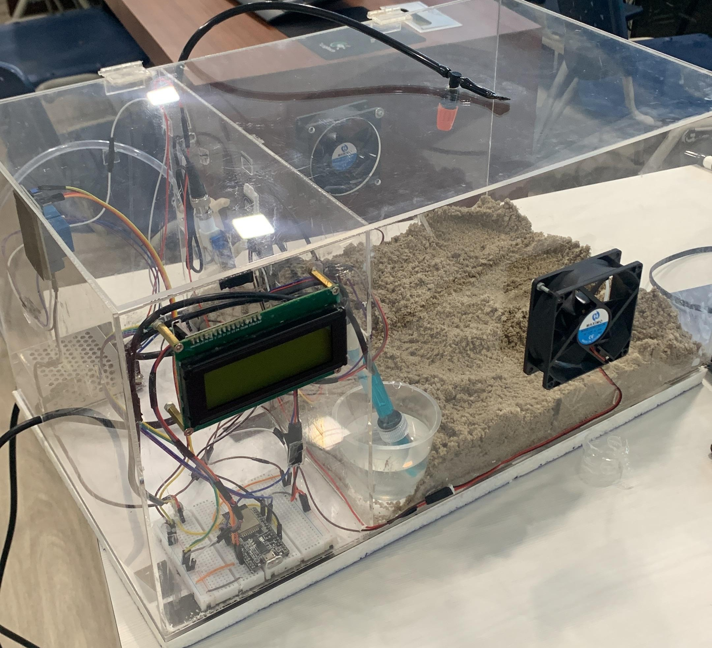
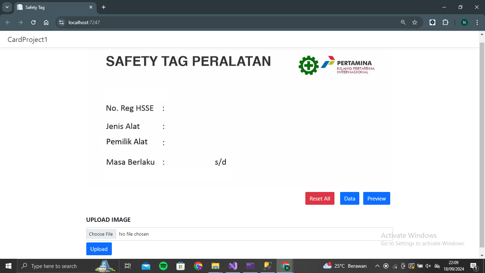
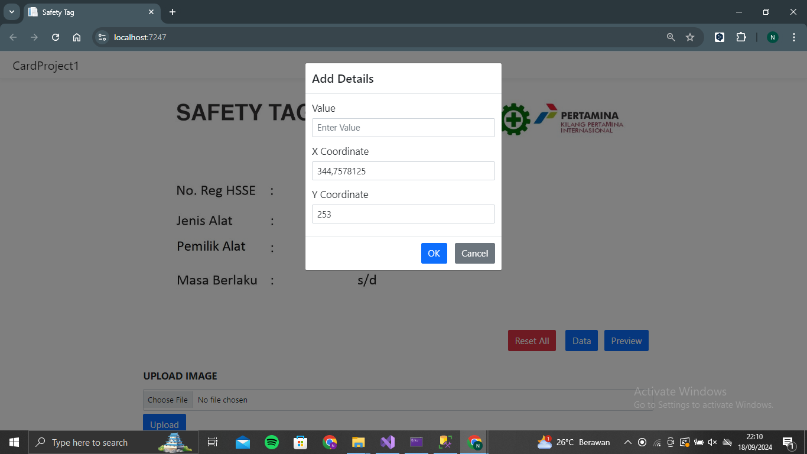

CERTIFICATIONS
PROJECT


Perancangan Prototype Sistem Cerdas Budidaya Itik Ratu Berbasis Internet of Things Menggunakan Logika Fuzzy Tsukamoto
Sistem Cerdas Budidaya Itik Ratu Berbasis Internet of Things (IoT) berfokus pada perancangan sistem
monitoring dan kontrol lingkungan kandang itik secara otomatis. Sistem ini memantau parameter suhu, kelembapan
udara dan tanah, serta pH air minum secara real-time menggunakan sensor yang terintegrasi dengan ESP32/Arduino.
Pengambilan keputusan otomatis dilakukan menggunakan Logika Fuzzy Tsukamoto untuk mengontrol kipas dan
pompa air, sehingga kondisi lingkungan kandang tetap optimal. Sistem ini dilengkapi dengan website dan
bot Telegram sebagai antarmuka monitoring dan kontrol jarak jauh, serta LCD I2C untuk menampilkan data
langsung di lokasi kandang.


Pembuatan Tools Card Generator Menggunakan .NET Core 8 dan SQL Server (Studi Kasus: PT Kilang Pertamina Internasional Unit Dumai)
Sistem Tools Card Generator dirancang untuk menghasilkan Safety Tag Peralatan dalam format digital yang dapat dicetak dan diaplikasikan sebagai stiker atau media identifikasi lainnya pada peralatan yang digunakan di area kilang. Aplikasi ini dikembangkan menggunakan .NET Core 8 dan SQL Server dengan metode Waterfall.
Aplikasi ini dilengkapi beberapa fitur utama, antara lain fitur Add, yang memungkinkan user mengklik langsung pada area tertentu pada gambar untuk menentukan posisi pengisian data (berdasarkan koordinat X dan Y). Tersedia juga fitur Reset Data untuk menghapus seluruh input, fitur Data untuk melihat informasi yang telah dimasukkan, serta fitur Upload Image untuk mengunggah tampilan atau template yang berbeda. Selain itu, terdapat fitur Preview untuk mengunduh Safety Tag dalam bentuk gambar sebelum dicetak atau digunakan.
2024Desain Aplikasi Sistem Akademik (SIKAD) Berbasis Mobile Menggunakan Figma.
Merupakan desain aplikasi mobile yang berfungsi untuk memudahkan mahasiswa dalam mengakses informasi akademik secara digital. Aplikasi ini menyediakan fitur utama seperti informasi perkuliahan, jadwal, dan data akademik lainnya dalam satu platform yang terstruktur. Desain dibuat sederhana dan intuitif agar mudah digunakan oleh seluruh pengguna.
2024Desain Aplikasi Donasi (KITA BERKAH) Berbasis Mobile Menggunakan Figma.
Merupakan desain aplikasi mobile yang berfungsi sebagai platform donasi digital untuk mempermudah pengguna dalam menyalurkan bantuan. Aplikasi ini menyediakan informasi program donasi serta proses donasi yang cepat dan praktis. Desain difokuskan pada kenyamanan, kejelasan informasi, dan peningkatan kepercayaan pengguna.
2024CONTACT
Silakan hubungi saya melalui email atau media sosial untuk kerja sama, peluang karier, atau diskusi proyek.